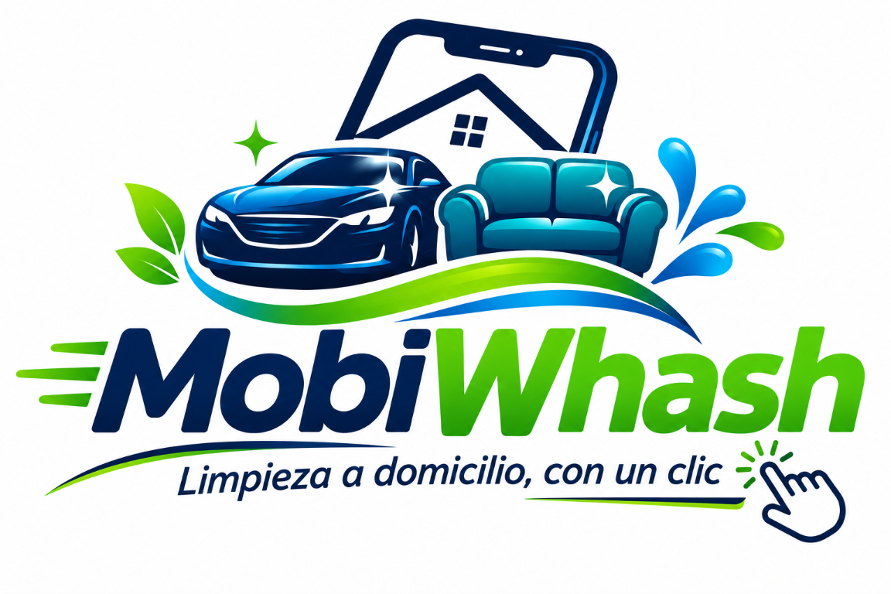
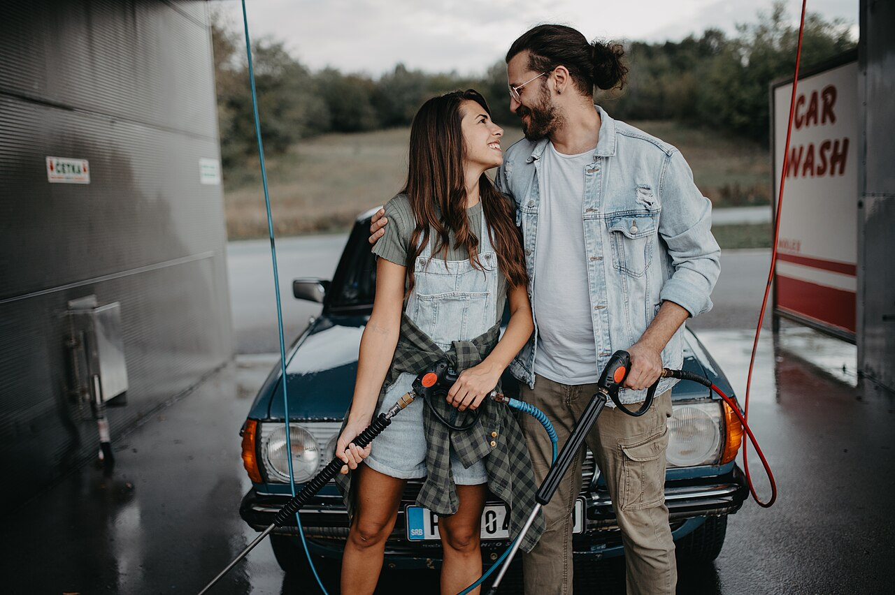
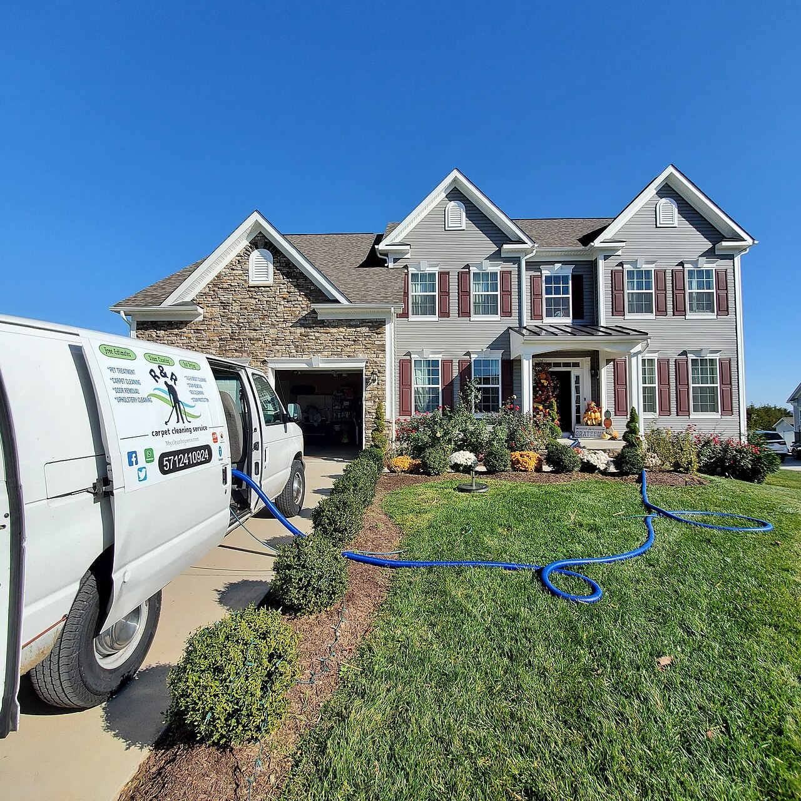
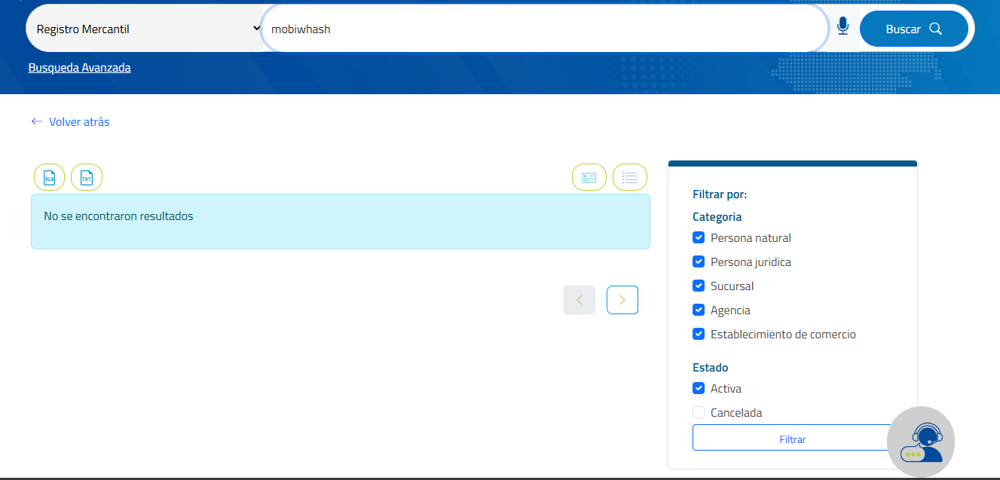
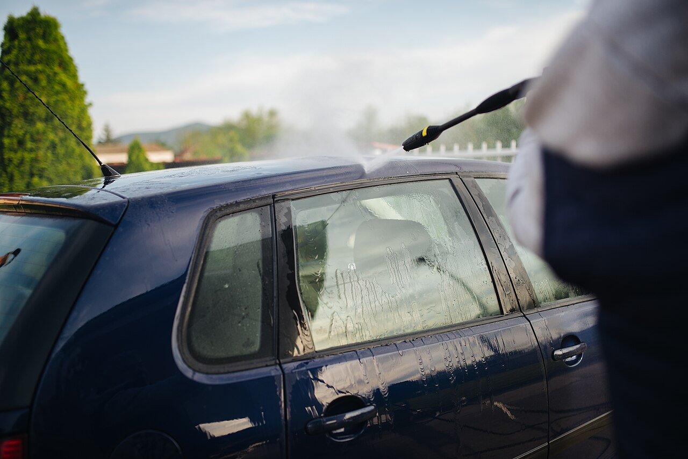
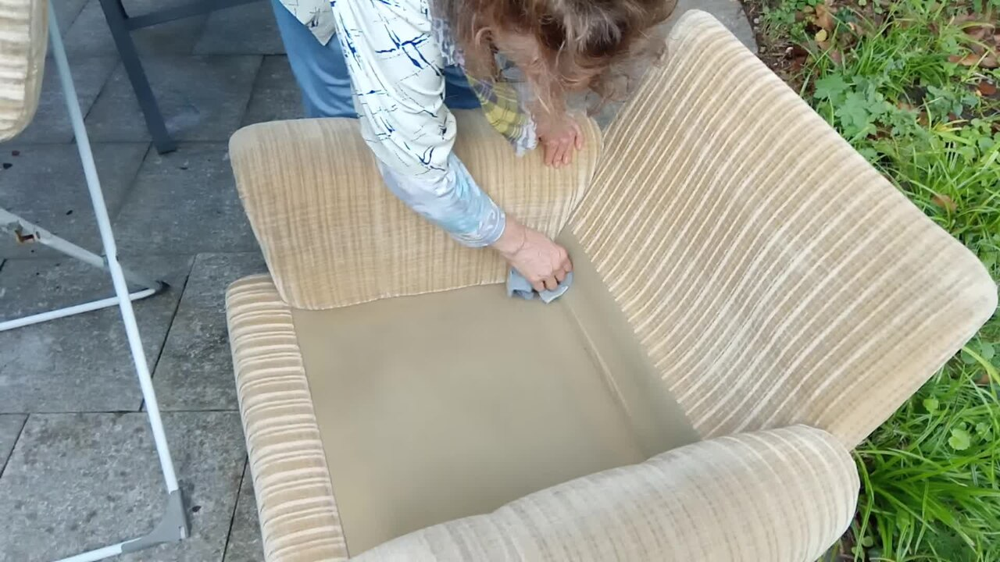
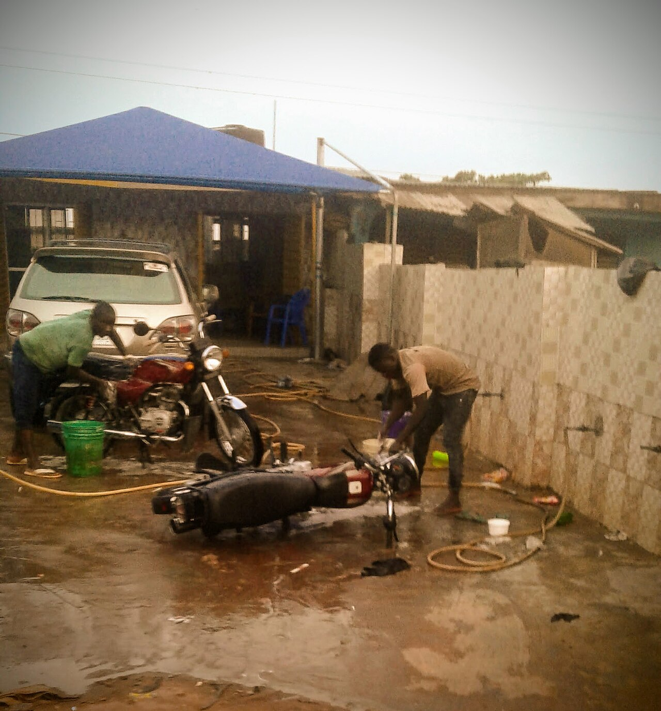
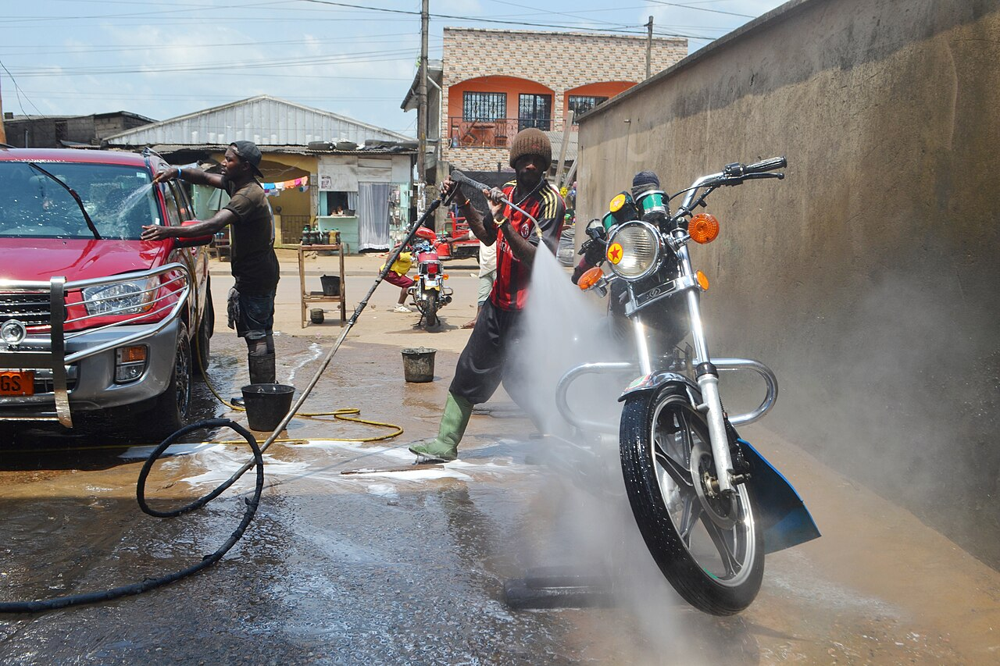

INICIATIVA EMPRESARIAL
Flechas para avanzar
ACTIVIDAD 03
Iniciación legal
del emprendimiento
Identidad empresarial y ruta de formalización
SOCIOS:
Erika Yasney Riveros Ortega Marbin Yanid Mantilla Bautista Cristian Dorlan Gelviz Carvajal Julián David García Moreno Diego Andrés Castillo Blanco

01 LA MARCA
NOMBRE COMERCIAL
MobiWhash
Práctico. Móvil. Fácil de recordar.
Verificar disponibilidad del nombre en RUES y antecedentes marcarios en la SIC.
02 CONSULTA DE REGISTRO
PASO 01 · VERIFICAR
¿El nombre
está disponible?
Consultar antes de registrar.
RUESCámara de Comercio
La captura muestra una búsqueda sin resultados. La disponibilidad debe confirmarse en la consulta oficial.

03 QUÉ HACEMOS



SERVICIO A DOMICILIO
Limpieza a domicilio
con un clic.
Lavado de vehículos y limpieza del hogar, coordinados de manera sencilla.
En tu ubicaciónCon cita previa
04 IDENTIDAD VISUAL
IMAGOTIPO
Una marca.
Una experiencia.
El nombre y el símbolo trabajan juntos para comunicar limpieza, movilidad y facilidad.
NombreSímboloServicio
05 SLOGAN
NUESTRA PROMESA
Limpieza a domicilio,
con un clic.
CERCA DE TI. A TU MANERA.
06 PALETA DE MARCA
BRANDING
Frescura que inspira confianza.
AZUL OSCUROConfianza
AZUL MEDIOMovimiento
VERDE PRINCIPALVitalidad
BLANCOClaridad
Profesionalismo
Movimiento
Vitalidad y cuidado
Espacios limpios
07 FORMALIZACIÓN
CONSTITUCIÓN LEGAL · MOBIWHASH
Persona natural.
¿POR QUÉ PERSONA NATURAL?
Un integrante será el titular legal y representará y administrará el negocio; los demás participarán en su desarrollo y funcionamiento.
El NIT mostrado es únicamente ficticio para fines académicos. El NIT real lo asigna la DIAN.
08 ACTIVIDADES ECONÓMICAS
CLASIFICACIÓN DE ACTIVIDADES
Códigos CIIU
Mantenimiento y reparación de vehículos automotores: incluye el lavado y limpieza de carros.
Mantenimiento y reparación de motocicletas: incluye el lavado y limpieza de motos.
Lavado y limpieza de productos textiles: incluye el lavado de alfombras y tapetes.
Comercio al por menor realizado a través de Internet: relacionado con las ventas mediante canales digitales.

MobiWhash
NOTA MobiWhash ofrece sus servicios a domicilio y utiliza una aplicación web para que los clientes consulten, agenden y paguen.